★★★★★
"This plastic yellow remover is pure magic! Years of dull discoloration fade away with little scrubbing. It revives a bright clean look and saved me tons of money on replacements."
k***r · ✓ Verified buyer
★★★★★
"Excellent yellow removal effect when following the instructions. Spray the surface, cover with wrap and seal for 3 days — great results right away!"
o***r · ✓ Verified buyer

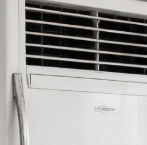
★★★★★
"My air conditioner casing had turned yellow after years of use and looked very old. After using this spray, the yellowed areas improved a lot and the surface looks much cleaner and brighter."
m***r · ✓ Verified buyer
★★★★★
"My old refrigerator had turned yellow after many years of use. After cleaning, the plastic surface looks much whiter and fresher. It feels like a new appliance again."
a***r · ✓ Verified buyer
★★★★★
"Great plastic yellow-removal spray! Restored my old rice cooker shell to bright white. Super easy to use, just spray and wipe. Amazing visible results, highly recommended."
a***r · ✓ Verified buyer
★★★★★
"This yellow removing spray works fantastically! It effortlessly stripped the aged yellow discoloration off my bathroom appliance casing, restoring its original clean white finish perfectly."
m***r · ✓ Verified buyer
★★★★★
"The application was simple and the result was impressive. My refrigerator plastic parts look refreshed without replacing any parts."
k***r · ✓ Verified buyer

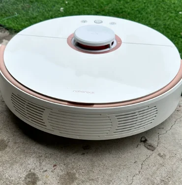
★★★★★
"Totally blown away! It easily strips ugly yellowing off old plastic like magic!"
f***r · ✓ Verified buyer
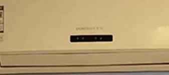
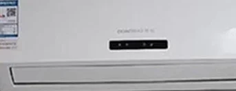
★★★★★
"Mind-blowing effect! Old faded yellow plastic shines bright white after simple application."
i***r · ✓ Verified buyer
★★★★★
"Works better with regular use and effectively prevents re-yellowing. The toilet seat looks new again."
v***r · ✓ Verified buyer
★★★★★
"Can't believe how powerful it is — zero yellow tint left after one simple use!"
p***r · ✓ Verified buyer
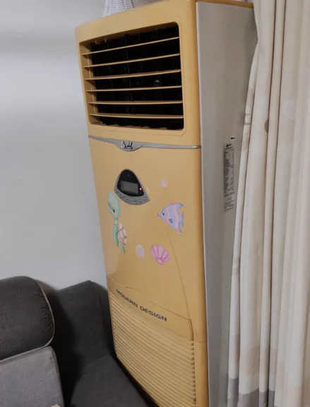
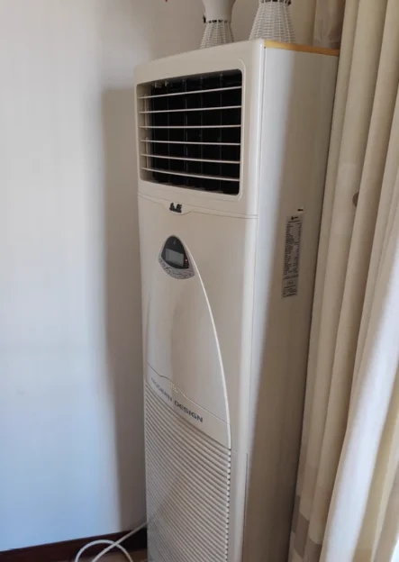
★★★★★
"Crazy powerful cleaner! Yellow stains vanish completely in minutes!"
a***r · ✓ Verified buyer
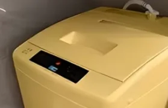
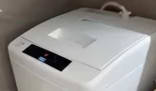
★★★★★
"My old appliances had started looking yellow and aged. After using this product, the surface looks much cleaner and fresher."
b***r · ✓ Verified buyer
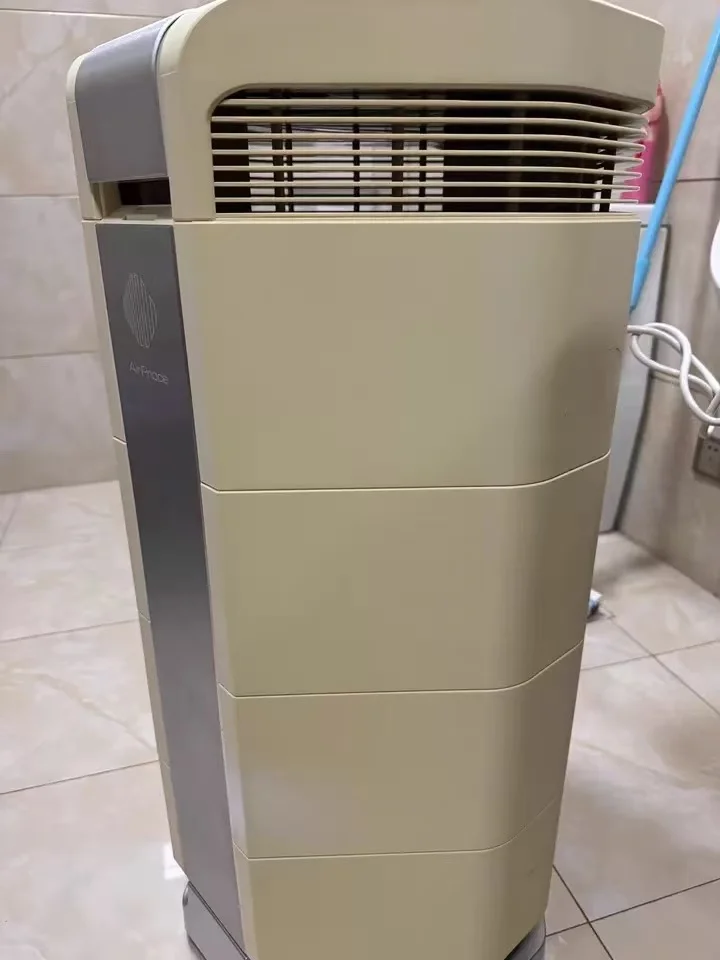
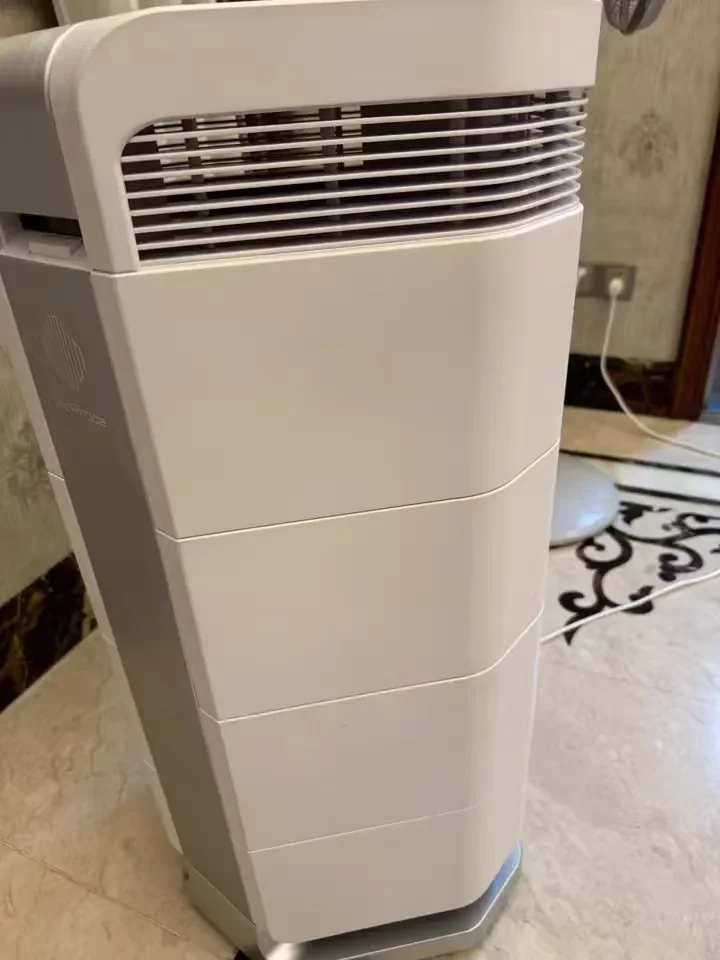
★★★★★
"Just a quick wipe removes yellow stains, no hard work needed — home looks brand new."
k***r · ✓ Verified buyer
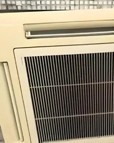
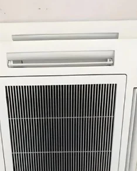
★★★★★
"This plastic yellowing remover works unbelievably amazing — beyond expectation!"
f***r · ✓ Verified buyer
★★★★★
"Best yellowing remover ever! Restored my retro console far beyond my expectations!"
z***r · ✓ Verified buyer
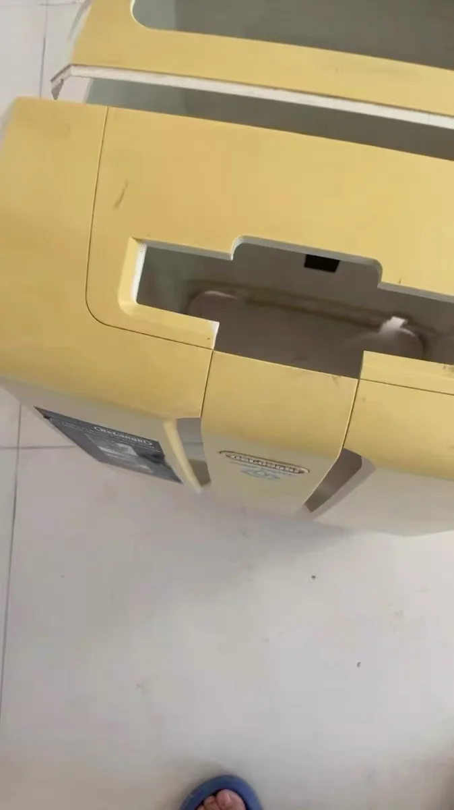
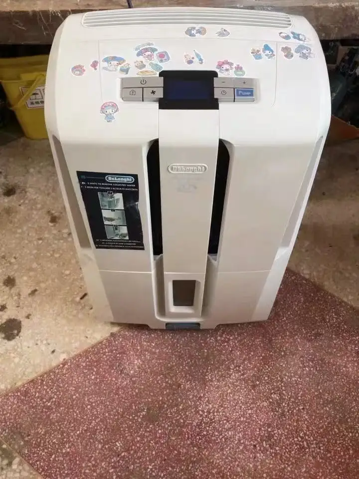
★★★★★
"The effect is immediate after one use — old home appliances look new again."
r***r · ✓ Verified buyer
★★★★★
"This plastic yellow remover works like magic! My collectibles look brand new again. Half-way photo says it all."
t***r · ✓ Verified buyer
 AFTER
AFTER